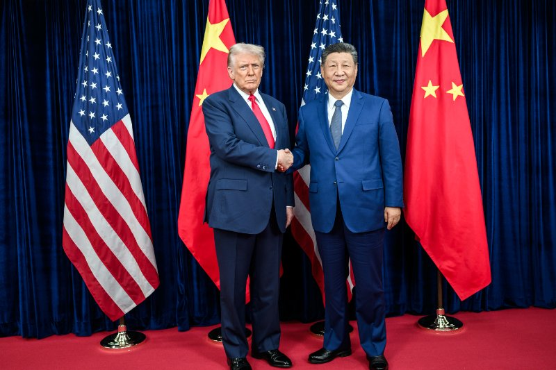

![NTK]()

Trump's press ban lasted five days and ended in a scramble. A federal judge ruled Thursday morning that the White House had likely violated the First Amendment by banning CNN, MS NOW and Politico "effectively immediately," the punishment Trump announced on Truth Social for what he called "FAKE NEWS" coverage (Atlanta Black Star). The order came down overnight, but reporters were turned away again Thursday morning, and officials inside the West Wing told CNN's Alayna Treene and Kristen Holmes they had no idea what was happening, "internal chaos" was the phrase used (The Daily Beast). Access was restored around noon, hours after the administration claimed in a court filing it had already complied (Mediaite).
That timing collided with the one audience Trump hadn't accounted for. Xi Jinping arrived Wednesday night for his first Washington visit in over a decade, and Chinese officials, according to a source cited by Treene, had quietly told people at the White House they were uneasy about the press ban coinciding with the visit (The Daily Beast). Trump's own deputy press secretary, Taylor Rogers, had told Spectrum News a day earlier there was "no comparison" between the two countries' press freedom, framing the ban as accountability for "fake news." Then, standing next to Xi during a photo spray Thursday, Trump joked that the Chinese press corps was the "friendliest" he'd dealt with (Mediaite).
If that doesn't tell you everything you need to know, I don't know what does.
Dana Bash, CNN anchorThe visit itself was built to project the opposite of chaos. Trump personally met Xi's plane at Joint Base Andrews, the first time a sitting president has greeted a foreign leader at the base since John F. Kennedy welcomed Harold Macmillan in 1962, then staged a Rose Garden military review with a colonial-era band, a B-2 bomber and four F-22s (Financial Times). Xi called for the two countries to "coexist in peace" and announced two pandas for the Atlanta zoo; Trump praised their "truly great friendship" and floated an AI dialogue between the two governments (Yonhap). Treasury Secretary Scott Bessent confirmed the trade truce from Busan was extended, but only two months, to Jan. 10, because Washington says Beijing hasn't held up its end (Financial Times). Underneath the toasts, Taiwan's chip factories, the reason both governments treat AI dominance as a security question, went unresolved: Xi told Trump privately that China's position on Taiwan was "crystal clear," and Trump has separately floated the island as "a very good negotiating chip" (DW).
Mitch McConnell, rarely seen in public since returning to the Senate in a wheelchair, used the same week to lead a letter with three other Republican senators demanding Trump release $1.3 billion in stalled Taiwan security aid, comparing the freeze to the one Ukraine got before Russia's invasion (The Daily Beast).
The two-month clock on the trade truce starts now, and so does the countdown to the fifth plenum.
Xi will almost certainly use the next two weeks to bank public wins before he needs any at home. The Chinese Communist Party's fifth plenum convenes next month, and Xi arrived in Washington needing images, not concessions, to bring back to it. He got them: a red carpet, a B-2 flyover, two pandas headed to Atlanta. The trade truce extension to Jan. 10 gives Beijing cover to claim stability without giving up anything on the underlying dispute. Watch for Chinese state media in the next 10 days to run the summit as proof Xi negotiated from strength, especially the Taiwan exchange, while Washington's coverage frames the same meeting as a stalemate. Both versions will be true enough to survive, which is the point.
That mismatch in what each side can afford to admit is what makes the Taiwan aid fight the more dangerous thread. Mitch McConnell's letter will not move the $1.3 billion by itself, but it has started a clock Trump now has to answer. Rubio and Hegseth were named directly and reminded of their own past statements on deterrence, which means their silence is now itself an answer. The most likely outcome in the next two weeks is a partial release, some fraction of the stalled aid moving forward under a different label, timed to avoid the appearance of caving to four senators mid-negotiation with Xi. A full release before the midterms would read as Trump abandoning his "negotiating chip" framing in public; total silence would hand McConnell's coalition, thin as it is, a live grievance heading into November. Trump does not like being cornered by his own party's China hawks, and Thom Tillis and Lisa Murkowski have both shown they'll say so on the record.
The press ban fight resolves faster and smaller. The Trump administration will almost certainly let the CNN, MS NOW and Politico ban die quietly rather than appeal the ruling. The White House already complied once the cameras were rolling on the Xi visit, and the joke about China's "friendliest" press corps did more damage to the ban's stated rationale than the lawsuit did. Appealing means putting a judge's First Amendment reasoning in front of an appellate panel, with the added embarrassment of the timing already public. The more likely move is a slow walk: no appeal, no formal reversal, just continued access while White House aides tell friendly outlets the case is "under review." That outcome protects the president's ability to try the same maneuver again with a less internationally inconvenient audience.
The room Trump and Xi just built has doors neither of them can see from where they're standing.
A partial Taiwan aid release could split McConnell's coalition instead of satisfying it. Trump now has a named list of Republicans, McConnell, Tillis, Murkowski, Cornyn, on record demanding the same $1.3 billion, which means a partial release lets him peel votes off one at a time rather than face a bloc. If Rubio moves a fraction of the money under a different budget line, as Probabilities suggested he might, Tillis and Murkowski have both shown they'll take a symbolic win in public and stand down. Cornyn, up for reelection in a state where China hawkishness plays well, has more incentive to keep pushing. McConnell's health makes him a wild card in either direction: a senator too frail to speak on the floor is also a senator who can't easily lead a second letter. That combination, a White House that just learned it can divide four senators with one partial payment, and a coalition held together mostly by McConnell's signature, is only visible now because the letter forced Rubio and Hegseth to answer this month, not quietly next year.
That split, if it happens, opens a second door nobody was looking at before this week. A weakened Taiwan hawk bloc in the Senate makes it easier for Trump to formalize the AI dialogue Bessent floated as a trade for Taiwan ambiguity. Xi got a B-2 flyover and two pandas without giving up anything on Taiwan's status; Trump got an extension of the trade truce without resolving the chip dispute that sits underneath it. If the Taiwan aid fight fractures into individual side deals instead of a unified Senate demand, Trump has more room to trade continued ambiguity on Taiwan, the same ambiguity he's already called a "negotiating chip", for Chinese cooperation on an AI framework he can announce as a legacy item ahead of midterms. That's not available to him this week, because McConnell's letter is still live and unified. It becomes available the moment that coalition splits, which is why this door only opens after the first one.
There's a door that opens the other way, too. The press ban reversal, small as it was, just handed McConnell's coalition and the press corps a shared incentive that didn't exist last week. A judge ruled the ban was likely unconstitutional using the same reasoning McConnell's letter uses against Trump on Taiwan: that credibility, once spent for short-term optics, doesn't come back on demand. CNN's Alayna Treene already has sourcing inside the West Wing good enough to catch the "internal chaos" line before the administration could control it. If Cornyn or Tillis want to keep public pressure on the Taiwan aid fight without breaking with Trump outright, leaking to reporters who just proved they can get a court order inside five days is a newly available tool it wasn't last month, when those same outlets had White House access nobody needed to fight for.
The friendliest press corps line was a joke. The ban that made the joke land was not.
Taylor Rogers said there is "no comparison" between how the U.S. and China treat the press, and used it to justify the ban. Trump's deputy press secretary told Spectrum News a day before the judge's ruling that banning CNN, MS NOW and Politico was accountability, not censorship, and that nothing about the timing next to Xi's visit carried any symbolism at all (Mediaite). It's an easy line to believe if the alternative is admitting the ban was retaliation dressed up as standards enforcement, and Rogers had a script to defend, not a fact pattern. The people who benefit from that framing are narrow and specific: Rogers keeps her job by giving the boss cover, and Trump gets to tell his base he's finally making "fake news" answer for itself, a promise that plays well with viewers who've already decided the press deserves it.
The claim collapsed within 24 hours, and it collapsed from the one direction the White House hadn't scripted for. A federal judge ruled the ban was likely unconstitutional. Chinese officials, the government actually being held up as the point of comparison, had quietly told people inside the White House they were uneasy about the ban's timing. And Trump himself, standing next to Xi at a photo spray, joked that China's press corps was the "friendliest" he'd dealt with, which is not a joke a president makes if he believes his own deputy's line that there's "no comparison." A press secretary can say the ban has nothing to do with China's visit. She cannot make her boss stop making jokes that say otherwise on camera.
The mechanism here isn't complicated: control access, then control the story about why access was controlled. Rogers wasn't describing what happened. She was building the version of events that lets the ban survive contact with a judge, a hostile press pool and a foreign government whose own restrictions on reporters are the actual standard Trump's team briefly, and unintentionally, admitted to admiring.
There is no comparison.
Taylor Rogers, principal deputy press secretary, on U.S. versus Chinese press accessThe historical shorthand for this move is older than cable news: control the room, then insist the room was always open. Nixon's press office ran the same play with the enemies list, decades before anyone called it messaging.